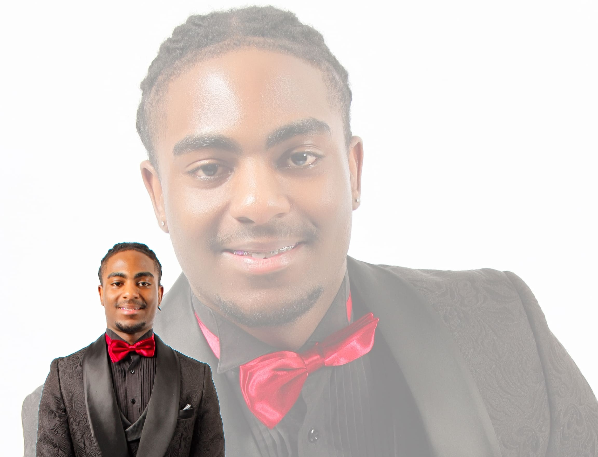
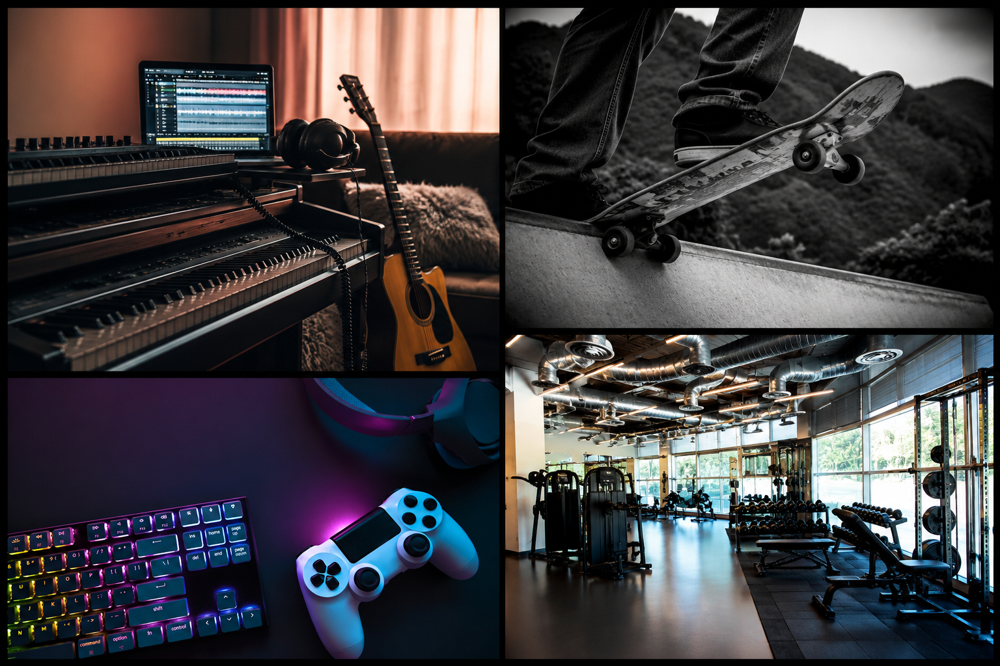

About Me

Who I Am
I'm Vuyisa Msipa, a Digital Arts student at the University of the Witwatersrand with a passion for software development, game development, and interactive technology. My interest in programming began at a young age through a curiosity about how digital systems work and how technology can be used to create meaningful experiences.
Since then, I've explored a wide range of technical and creative disciplines, from web development and software engineering to game design and embedded systems. Working across these different areas has given me a multidisciplinary perspective and taught me to approach problems with both analytical thinking and creativity.
I enjoy building solutions that balance functionality, usability, and design. Whether developing software, creating interactive experiences, or experimenting with new technologies, I am driven by a desire to continuously learn, improve, and create work that has a positive impact on the people who use it.
Having worked on projects across multiple fields, I believe the best solutions come from understanding the problem first and choosing the right tools and technologies for the task, rather than relying on a single approach. This mindset continues to shape how I learn, collaborate, and develop as a creator and engineer.
Achievements
A selection of academic, leadership, and sporting achievements that reflect my dedication to excellence, perseverance, and continuous growth.
- Top Information Technology Student — Grade 11 (2022)
- Certificate of Merit for Information Technology — Grade 10 (2021)
- Certificate of Merit for Academic Excellence — Grade 10 (2021)
- Full Colours for Academics — Grade 11 (2022)
- Half Colours for Academics — Grade 12 (2023)
- Half Colours for 1st team Athletics — 2022 & 2023
- Team Award for 1st Team Soccer — 2022 & 2023
- Caleb Award for Perseverance and Diligence in Assigned Tasks (2023)
- 1st Team Tennis Captain — Led and coordinated school tennis team activities (2022–2023)
- 1st Team Cricket Player — Participated in and contributed to school cricket team activities (2021–2022)
- Pastoral Mentor — Supported and mentored fellow students while assisting with school events (2022–2023)
Education & Qualifications
My academic journey combines engineering, software development, game design, and digital arts, allowing me to approach projects with both technical expertise and creative thinking.
- Bachelor of Engineering Science in Digital Arts — University of the Witwatersrand (2024 – Present)
- Information Engineering — University of the Witwatersrand (2027 – 2028)
- Software Development and Programming
- Game Design and Interactive Media
- Web Development and User Experience Design
- Creative Technology and Digital Innovation
- National Senior Certificate — Christ Church Preparatory School & College (2023)
Career Goals
Short-term
Secure an internship, graduate programme, or entry-level role where I can apply and expand my skills in software development, game design, and digital technologies. My goal is to gain more hands-on experience, contribute to meaningful projects, and continue developing my programming, design, and problem-solving abilities through both professional experience and further academic learning.
Long-term
Become an Information Engineer and software professional who develops innovative digital systems, software solutions, and interactive experiences that create real-world impact. I aspire to solve meaningful challenges through technology, contribute to innovation, and help build solutions that improve lives and drive progress within the Fourth Industrial Revolution.
I'm driven by a passion for technology and its potential to solve problems. From software engineering and game development to digital systems and emerging technologies, I enjoy transforming ideas into practical, engaging, and impactful solutions. I believe innovation happens when curiosity, creativity, and technical expertise come together, and I am committed to continuously learning, growing, and contributing to a better future through technology.
My Hobbies
Outside of technology, I enjoy a variety of creative and active activities that help me maintain balance and inspire new ideas. Music has always been an important part of my life, and I enjoy playing both the electric guitar and piano. I stay active through football, skateboarding, and regular gym training, while gaming continues to fuel my interest in interactive experiences, design, and problem-solving. I'm also a passionate movie enthusiast and enjoy spending quality time with my dogs. My curiosity goes beyond software into technology itself, and I often find myself troubleshooting, repairing, and learning how different devices and systems work. Whether I'm creating, learning, building, or exploring new ideas, I enjoy opportunities that challenge me to grow both personally and professionally.
